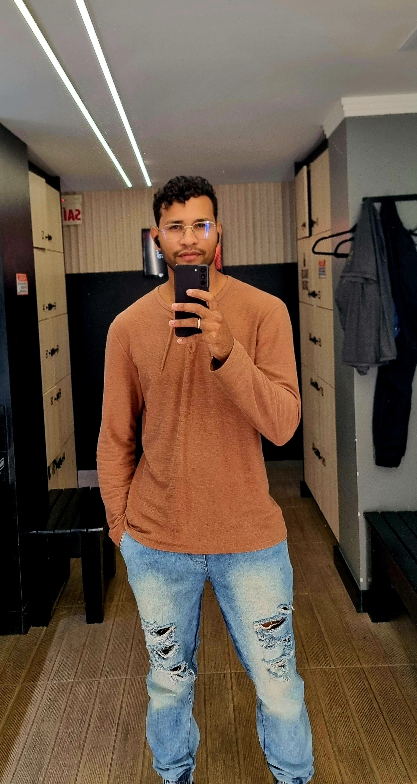

Introdução
Olá, eu sou Julio!
Como estudante de Análise e Desenvolvimento de Sistemas, encontrei na programação a paixão por criar e transformar ideias em soluções reais. Minha jornada é impulsionada pelo desejo de construir sistemas eficientes e inovadores que resolvam problemas e gerem valor.

Meu percurso em Análise e Desenvolvimento de Sistemas me proporcionou uma base sólida em arquitetura de software, banco de dados e metodologias ágeis. Sou movido pela lógica e pelo desafio de projetar e implementar soluções robustas. Tenho um foco especial no desenvolvimento Back-end com Python, explorando o poder da linguagem para construir APIs, automatizar processos e manipular dados de forma inteligente.
Minha Jornada de Aprendizado e Ferramentas

Python
Linguagem principal para desenvolvimento Back-end, automação e análise de dados.
Flask (Python)
Construção de APIs RESTful e aplicações web leves e performáticas.
Django (Python)
Familiaridade com o framework Django para desenvolvimento web robusto e estruturado.

JavaScript
Aprendizado contínuo para interações Front-end e dinamismo nas interfaces.